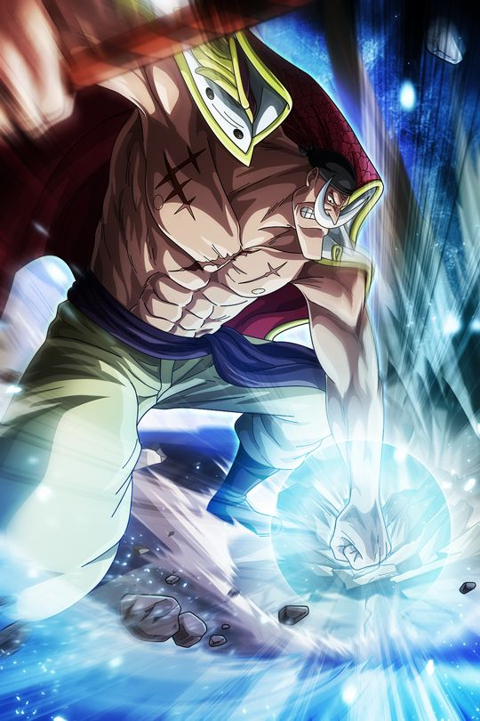

¿Quiénes son los Yonkous?
Los Yonkous, también conocidos como los Cuatro Emperadores, son un grupo de los piratas
más poderosos y temidos en el mundo de "One Piece". Estos cuatro líderes carismáticos
y formidables gobiernan vastas porciones del Grand Line, cada uno controlando su propio
territorio y ejerciendo una influencia masiva en los asuntos piratas y mundiales. Los Yonkous
actuales son Shanks, Buggy, Monkey D. Luffy y Marshall D. Teach (Barbanegra). Cada uno posee una tripulación
formidable y es un jugador clave en la intrincada red de poderes que da forma al mundo de "One Piece",
desencadenando eventos cruciales y desafiando constantemente las estructuras establecidas.
Monkey D.Luffy
Luffy es conocido por su personalidad extrovertida, su amor por la aventura y su deseo de proteger
a sus amigos. A menudo es ingenuo, pero su determinación y lealtad son inquebrantables.
Es el capitán de los Piratas del Sombrero de Paja y se preocupa profundamente por cada miembro
de su tripulación. A pesar de su actitud despreocupada, Luffy toma situaciones serias cuando es
necesario, especialmente cuando se trata de proteger a sus amigos o perseguir sus sueños.
Luffy consume la Fruta del Diablo Gomu Gomu, una Fruta del Tipo Paramecia que le otorga la capacidad
de estirar su cuerpo como si fuera de goma. Esta habilidad le confiere una serie de técnicas y
movimientos únicos.
Se convirtió en Yonkou en Wano, tras derrotar a Kaido con su fruta recién despertada. Es uno de los piratas
más temidos actualmente y uno de los más poderosos.

Gear Second: Luffy desarrolla la técnica llamada "Gear Second", donde acelera su
circulación sanguínea, aumenta la velocidad y fuerza de sus ataques. Esto provoca que su cuerpo se
vuelva temporalmente recubierto por una capa de vapor.
Gear Third: Otra técnica de Luffy, "Gear Third"
, implica inflar sus huesos (específicamente su brazo) utilizando aire, creciendo enormemente en
tamaño y aumentando la fuerza de sus golpes. Sin embargo, esto tiene como consecuencia una reducción
temporal de su velocidad.
Haki: Luffy también desarrolla habilidades de Haki, una energía espiritual
que permite a los usuarios realizar hazañas sobrehumanas. Luffy ha demostrado dominar tanto el Haki
del Rey Conquistador como el Haki de Observación y el Haki del Armamento.
Gear Fourth(Boundman):se caracteriza por el aumento masivo del cuerpo de Luffy y una mejora significativa
en su fuerza y velocidad. Luffy se hincha y adquiere una apariencia más musculosa y robusta.
Gear Fourth(Tankman):Una forma más defensiva de Gear Fourth. Luffy adopta una postura más compacta y defensiva,
similar a un tanque. Luffy se vuelve más redondo y adquiere una apariencia más rechoncha.
Gear Fourth(Snakeman): Una forma más enfocada en la velocidad y en ataques evasivos. Luffy adopta una postura más
delgada y ágil, similar a una serpiente. Luffy se vuelve más delgado y su postura se vuelve más aerodinámica.
Gear Fifth(Nikoman): Es el despertar de la fruta de Luffy y puede hacer que las cosas que el toque se vuelvan de goma.
Tiene un aspecto normal pero con el pelo blanco y tiene muchas posibilidades. Se podría decir que con esta transformación
se vuelve libre.
Buggy
Buggy el Payaso es un pirata y un personaje cómico. Antes de convertirse en uno de los
Siete Guerreros del Mar (Shichibukai), Buggy era miembro de los Piratas de Roger y formaba
parte de la tripulación del Rey Pirata Gol D. Roger. Después de la ejecución de Roger, Buggy
emprendió su propio camino como pirata y fundó los Piratas de Buggy. Actualmente ha ascendido a Yonkou
tras la alianza Cross Guild que ha formado con MiHawk y Crocodile.
Buggy es conocido por su personalidad cómica y egocéntrica. Aunque inicialmente se presenta como un personaje
débil y cobarde, su habilidad para dividir su cuerpo en partes gracias a la Fruta Bara Bara no Mi le otorga
una inusual capacidad defensiva. A pesar de su falta de poder relativo, Buggy tiene una habilidad innata para
sobrevivir a situaciones peligrosas y ha adquirido una cierta notoriedad en el mundo pirata.
Fruta Bara Bara no Mi: Buggy consumió la Fruta Bara Bara no Mi, que le
otorga la capacidad de dividir su cuerpo en partes sin sufrir daño. Puede separar sus extremidades y torso a
voluntad, lo que le permite esquivar ataques y desplazarse de manera única.
Control de Cuerpo Dividido:
La habilidad de Buggy para dividir su cuerpo le proporciona cierta inmunidad contra los ataques físicos,
ya que los cortes y golpes simplemente lo separan en partes sin causarle daño real. Sin embargo, su
vulnerabilidad radica en que su cabeza es la parte más crítica.
Influencia en el Mundo Pirata: Buggy obtuvo cierta notoriedad después de su
participación en la Batalla de Marineford y su nombramiento como uno de los Siete Guerreros del Mar.
Aunque gran parte de su fama se basa en situaciones cómicas y malentendidos, Buggy ha logrado capitalizar
su reputación para atraer a seguidores y ganar influencia.
Marshal D. Teach
Marshall D. Teach, conocido comúnmente como Barbanegra, es un pirata y uno de
los personajes más significativos. Es el capitán de los Piratas Barbanegra y
fue miembro de la tripulación de Shirohige (Barbablanca) antes de convertirse en pirata. Barbanegra es
un antagonista central en la serie y es conocido por su ambición desmedida y su papel en eventos
cruciales.
Barbanegra es retratado como un individuo astuto y ambicioso. Su deseo de alcanzar la grandeza y su
creencia en la "voluntad del D." lo han llevado a realizar acciones audaces y peligrosas. Aunque
inicialmente se presenta como un hombre educado y tranquilo, su ambición sin restricciones y su
falta de remordimiento por sus acciones lo convierten en un villano formidable y complejo.

Fruta del Diablo - Yami Yami no Mi: Barbanegra consumió
la Yami Yami no Mi, una Fruta del Diablo tipo Logia que le otorga el poder de la oscuridad. Con
esta fruta, puede crear y controlar la oscuridad a su alrededor. La oscuridad de Barbanegra es única,
ya que tiene la capacidad de absorber otras Frutas del Diablo y anular sus poderes.
Habilidad para Absorber Frutas del Diablo:
Una de las habilidades más inusuales y poderosas de Barbanegra es su capacidad para absorber otras Frutas del
Diablo al contacto directo con el usuario después de que este muera. Esta habilidad le permite acumular múltiples
poderes de Frutas del Diablo simultáneamente, convirtiéndolo en un oponente temible y versátil.
Participación en la Guerra en Marineford:Barbanegra desempeñó un papel
crucial durante la Guerra en Marineford, aprovechando el caos para robar los poderes de la Fruta
del Diablo del fallecido Shirohige. Este evento marcó el ascenso de
Barbanegra al estatus de Yonkou, uno de los cuatro emperadores piratas más poderosos del mundo.
Shanks
Shanks es un personaje clave y es conocido como uno de los Yonkou, los cuatro emperadores
piratas más poderosos del mundo. Antes de ser un emperador, Shanks fue miembro de la tripulación
del Rey Pirata Gol D. Roger y, posteriormente, fundó su propia tripulación, los Piratas de Shanks.
Shanks es conocido por su actitud relajada, su carisma y su capacidad para influir en otros personajes.
A diferencia de algunos piratas, Shanks no se destaca por su brutalidad o crueldad. Es amistoso,
generoso y muestra un profundo respeto por la valentía y la amistad.
Shanks tiene una conexión especial con el protagonista, Monkey D. Luffy. Antes de perder su brazo izquierdo para salvar
la vida de Luffy de un monstruo marino, Shanks le entregó a Luffy su sombrero de paja, que se ha convertido
en un símbolo importante a lo largo de la serie.
Habilidad con la Espada y Dominio de Haki: Shanks es un espadachín habilidoso y posee un
dominio avanzado de varias formas de Haki, incluido el Haki del Rey. El uso de esta forma de Haki
le permite dominar a aquellos con una voluntad más débil y es un testimonio de su impresionante presencia y fuerza.
Influencia Política y Pirata: Shanks es uno de los Yonko, lo que significa que tiene
un poder significativo tanto en el mundo pirata como en el político. Su presencia es respetada y temida, y su
influencia se extiende a través de vastas áreas del Grand Line.
Paz y Estabilidad en el Nuevo Mundo:
Aunque Shanks es un pirata, ha expresado su deseo de mantener la paz y la estabilidad en el Nuevo Mundo. Su enfoque
en la coexistencia y el equilibrio lo distingue de otros emperadores, y su interacción con otros personajes
refleja su deseo de evitar conflictos innecesarios.
Big Mom (Antigua Yonkou)
Big Mom era una de los Yonkou, los cuatro emperadores piratas más poderosos del mundo.
Su nombre real era Charlotte Linlin, y era la capitana de los Piratas de Big Mom.
Poseía una personalidad impredecible y una voracidad insaciable por los dulces y golosinas.
Big Mom era conocida por su temperamento volátil y sus drásticos cambios de humor. Su obsesión por los dulces
y su búsqueda constante de cumplir con sus "caprichos" fueron aspectos clave de su personalidad.
A pesar de sus tendencias violentas, también podía mostrarse maternal y protectora hacia sus hijos
y subordinados, aunque estas emociones eran igualmente intensas.
Fruta del Diablo - Soru Soru no Mi: Big Mom fue la usuaria de la Fruta del Diablo Soru Soru no Mi,
que le otorgó la capacidad de manipular y controlar las almas. Podía extraer y almacenar almas,
así como transferirlas a otros objetos y seres vivos. Además, podía utilizar estas almas para otorgar
poderes específicos.
Antigua Prominencia como Yonko: Big Mom fue uno de los cuatro emperadores piratas que gobernaban el Nuevo Mundo. Su
territorio, la isla Whole Cake, fue un poderoso centro de poder y comercio. La mera mención de su nombre infundía
temor en aquellos que conocían su reputación.
Antigua Crew de los Piratas de Big Mom: Los Piratas de Big Mom constituían una tripulación masiva y diversa, compuesta
por varios hijos y comandantes. Cada uno de sus hijos formaba parte de una alianza política entre Big Mom y diversas naciones y linajes.
Habilidad de la Creación de Homies:
Utilizando la Fruta del Diablo, Big Mom tenía la capacidad de crear seres llamados Homies, dándole vida a objetos y criaturas inanimadas.
Estos Homies podían tener habilidades y personalidades propias.
Zeus, Prometheus, Hera y Napoleón:
Homies especiales de Big Mom con los cuales podía hacer grandes ataques. Prometheus ataques de fuego, Zeus y Hera
eléctricos y Napoleón su sombrero pirata que se convertía en espada.
Kaido (Antiguo Yonkou)
Kaido, conocido como "El Hombre más Fuerte del Mundo" , fue uno de los Yonko, los cuatro emperadores piratas
más poderosos del mundo. Gobernaba sobre la isla Onigashima en el País de Wano y lideraba
los Piratas Bestias. Su deseo declarado era iniciar la "Más Grande Guerra del Mundo".
Kaido era conocido por su naturaleza indomable y su búsqueda constante de la emoción y la confrontación.
Anhelaba la guerra y la destrucción, buscando desesperadamente un oponente que pudiera matarlo, ya que
parecía ser invulnerable a métodos convencionales de daño. Su personalidad estaba marcada por una
insensibilidad aparente hacia la vida, ya que veía a la muerte como un medio para alcanzar su deseo
de encontrar un oponente digno.
Fruta del Diablo - Uo Uo no Mi, Modelo Seiryu: Era un usuario de la Fruta del Diablo que le permitía transformarse en
un Dragón enorme con la capacidad de lanzar grandes ataques de fuego y que tiene una increíble resistencia.
Resistencia Sobresaliente: Era famoso por su capacidad para sobrevivir a innumerables intentos de ejecución y autolesiones.
Había intentado suicidarse de diversas formas, pero siempre sobrevivía, lo que le valió el apodo de "Inmortal Kaido".
Armadura de Escamas de Dragón:
Podía cubrir su cuerpo con escamas que se asemejaban a las de un dragón, lo que aumentaba aún más su resistencia y hacía que fuera difícil dañarlo.
Crew de los Piratas de las Bestias: Kaido lideraba una tripulación masiva conocida como los Piratas de las Bestias. Su tripulación
estaba formada por poderosos subordinados, incluyendo a los Tres Calamidades y otros destacados ejecutivos.
Haki:
Como Yonkou, poseía en gran medida todos los tipos de Haki, en especial el de armadura.
Shirohige (Antiguo Yonkou)
Shirohige, también conocido como Barba Blanca, fue uno de los personajes más destacados. Antes de su fallecimiento,
ocupó el título de Yonkou, uno de los cuatro emperadores piratas más poderosos del mundo. Su nombre real era Edward Newgate, y fue el capitán de los
Piratas de Barba Blanca.
Barba Blanca era conocido por su personalidad compasiva y su fuerte sentido del honor. A pesar de ser un pirata y un hombre de gran poder, Barba Blanca tenía un código
moral estricto y valoraba la familia y la lealtad. Fue una figura paternal para su tripulación y para varios piratas y habitantes del mar.

La Fruta del Diablo - Gura Gura no Mi: Fue el consumidor de la Gura Gura no Mi, una Fruta del Diablo tipo Paramecia
que le otorgó el poder de crear terremotos y manipular las vibraciones sísmicas. Esta fruta le permitía desencadenar ondas de choque devastadoras, tanto
en el agua como en la tierra.
Enorme Fuerza Física: Era conocido por su fuerza física descomunal, incluso sin el uso de su Fruta del Diablo.
Sus habilidades en el combate cuerpo a cuerpo eran legendarias, y podía enfrentarse a múltiples oponentes poderosos simultáneamente.
Liderazgo de los Piratas de Barba Blanca:
Lideró una de las tripulaciones piratas más fuertes y numerosas del mundo, los Piratas de Barba Blanca. Su
tripulación estaba compuesta por varios comandantes poderosos, y él era respetado y querido por sus subordinados.
Haki:
Era uno de los mayores usuarios de Haki. Controlaba todos los tipos, hasta el Haki del Rey.
Gol D. Roger (Antiguo Rey De Los Piratas)
Gol D. Roger, también conocido como "El Rey de los Piratas", fue una figura central en la historia.
Fue el único pirata conocido que alcanzó la ubicación del One Piece en la isla Laugh Tale y se convirtió en el Rey de los Piratas.
Antes de su ejecución, lideró los Piratas de Roger.
La personalidad de Gol D. Roger era carismática y audaz. Era conocido por su valentía, ingenio y determinación inquebrantable.
Aunque era un pirata, sus acciones y palabras inspiraron a muchos, y su actitud ante la muerte fue notoria por su falta de miedo.
Habilidad para Leer Poneglyphs: Tenía la capacidad única de leer y entender los Poneglyphs, unas antiguas inscripciones que revelaban
la ubicación del One Piece. Esta habilidad fue fundamental para llegar a Laugh Tale y descubrir el tesoro dejado por la "Antigua Civilización".
Conquista del Haki: Roger era un usuario avanzado del Haki, específicamente del Conquista del Haki, que le permitía dominar y aterrorizar
a aquellos que no podían resistirse a su voluntad. Su presencia imponente y su habilidad para influir en otros fueron atributos notables de su dominio del Haki.
Liderazgo de los Piratas de Roger:
Lideró una de las tripulaciones más poderosas y famosas de la era pirata, los Piratas de Roger. Su tripulación estaba compuesta por piratas notables como Silvers Rayleigh,
Scopper Gaban y otros que se destacaron en la historia.
Descubrimiento del One Piece y el Siglo Vacío:
Roger fue el único conocido por llegar a Laugh Tale, donde descubrió el One Piece y la verdad detrás del Siglo Vacío. Su capacidad para entender la importancia de estos
descubrimientos tuvo un impacto duradero en el mundo.
Recompensas